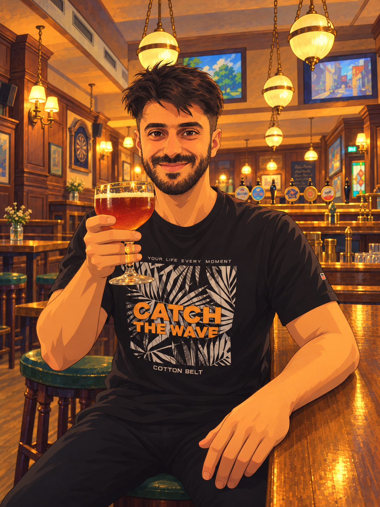

Fotografia in arrivo
Photograph forthcoming

Co-rettoreCo-Rector
Prof. Dr. Avenger Bagnarol
Si occupa di fisica teorica e matematica, con attenzione alla modellizzazione dei sistemi fisici. Integra metodi analitici e computazionali per studiare il comportamento dei modelli e l’affidabilità delle simulazioni numeriche.
Works in theoretical and mathematical physics, with a focus on modelling physical systems. Combines analytical and computational methods to study model behaviour and the reliability of numerical simulations.
Interessi di ricerca
Research interests
Fisica teorica e matematica · Fisica computazionale · Metodi numerici · Modellizzazione e simulazione
Theoretical and mathematical physics · Computational physics · Numerical methods · Modelling and simulation
PubblicazioniPublications